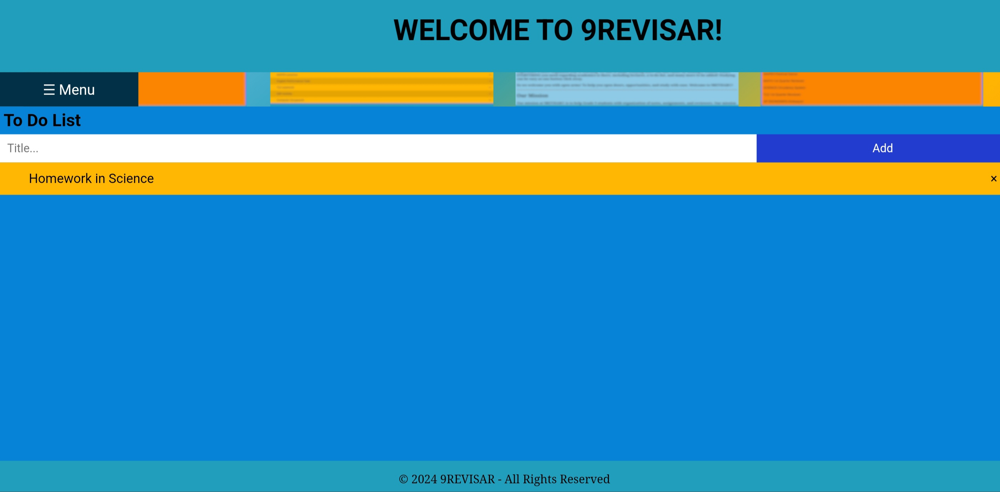

How to use the Subjects panel?
You can use the Subjects panel using this guide:
First, Click the menu button.
A list will pop up, and you should click the option "Subjects"
A list of a variety of topics and lessons will show up, but to find what you're looking for quicker, you can try using the search bar.
For Example, lets try searching for English topics.
There you go!
lets try another one.. maybe Filipino?
Its working pretty well!
The Subjects Panel is always updating, so stay tuned for more lessons and topics that will be uploaded in the future!.
How to use the To-Do list?
You can use the To-Do list using this easy steps:
First, Click the menu button.

A list will pop up, and you should click the option "To-Do list"
A blank blue page will appear, with a bar on top. To list down what you want to add, type it here
After listing it down, click the Add button.
You have now added your first Task!

You can try adding and listing more, for the list is scrollable and will never get full.
When you finished one or some of the listed tasks, you can check them from the list.
When you are done, you can also remove them from the list.
You now know how to use the To-Do list!
How to Contact Us?
9 Revisar is constantly undergoing updates.
Our team is always thinking of new and better ways to help users like you, to achieve a fun and easy way of learning.
With that, we would really appreciate your comments, and suggestions that can help make our website more user friendly.
You can reach out to us and send your suggestions using the following platforms:
Or send us an Email through our Gmail account: 9revisar.official@gmail.com
How to share to your Friends?
If you find this website useful, you should share it with your friends!
We are glad we can help you with your studies, so what better way to celebrate than to share this website with your classmates, friends, and peers!
There are many ways to share this website, such as:
Copying this Link: 9revisar.github.io/OurWebsite
Sharing our Facebook Page!
Using this QR code!